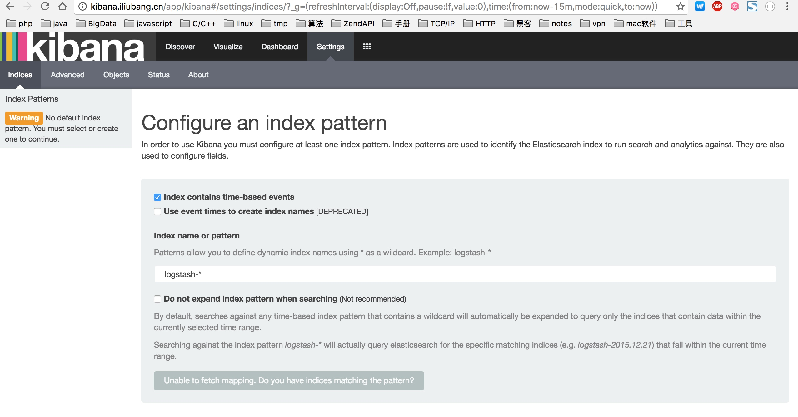
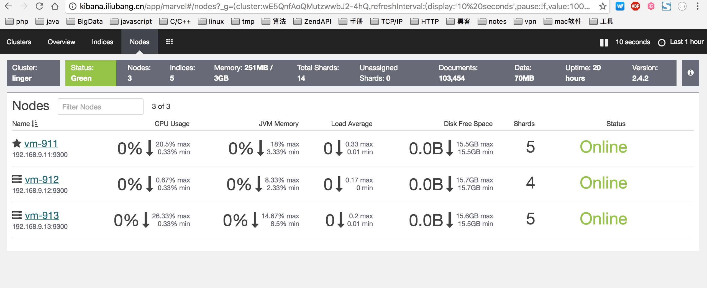
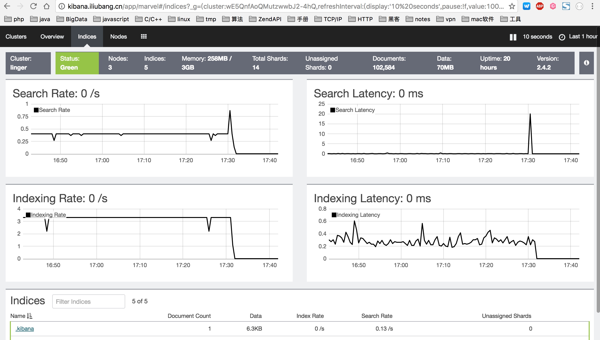

1. 服务器节点和所需软件准备
服务器
- vm-911(debian8, 192.168.9.11)
- vm-912(debian8, 192.168.9.12)
- vm-913(debian8, 192.168.9.13)
软件
2.开始安装
注意： 安装前请确保系统能够支持https，如果不支持，需要进行一下操作
sudo apt-get update
sudo apt-get install apt-transport-https ca-certificates
(1). 配置jdk
首先要在每个节点上配置好jdk的环境，各个节点配置方法相同
#进入软件安装目录s
cd /opt/app
#下载jdk
sudo curl -L "http://download.oracle.com/otn-pub/java/jdk/8u112-b15/jdk-8u112-linux-x64.tar.gz" -H "Cookie: oraclelicense=accept-securebackup-cookie" -H "Connection: keep-alive" -O
#解压
sudo tar -zxvf jdk-8u112-linux-x64.tar.gz
sudo mv jdk-8u112 java
#添加环境变量
sudo echo 'export JAVA_HOME=/opt/app/java' >> /etc/bashrc
sudo echo 'export CLASSPATH=.:$JAVA_HOME/lib/dt.jar:$JAVA_HOME/lib/tools.jar' >> /etc/bashrc
sudo echo 'export PATH=$JAVA_HOME/bin:$GOPATH/bin:$PATH' >> /etc/bashrc
source ~/.bashrc
注意
1. 设置环境变量的时候使用/etc/bashrc文件，而没有使用~/.bashrc，是因为后期很多操作需要使用sudo，如果放在私有配置文件中，那么还需要给root用户也配置一套环境变量，所以为了避免重复，使用了全局配置.
2. 在用户~/.bashrc文件中加入以下代码
if [ -f /etc/bashrc ] ; then
. /etc/bashrc
fi
(2). 下载并安装elasticsearch
cd /opt/app
sudo wget https://download.elastic.co/elasticsearch/release/org/elasticsearch/distribution/tar/elasticsearch/2.4.2/elasticsearch-2.4.2.tar.gz
sudo tar -zxvf elasticsearch-2.4.2.tar.gz
# 安装Marvel Agent
cd elasticsearch-2.4.2
sudo bin/plugin install license
sudo bin/plugin install marvel-agent
(3). 下载并安装kibana
cd /opt/app
sudo wget https://download.elastic.co/kibana/kibana/kibana-4.6.1-linux-x86_64.tar.gz
sudo tar -zxvf kibana-4.6.1-linux-x86_64.tar.gz
#安装marvel插件
cd kibana-4.6.1
bin/kibana plugin --install elasticsearch/marvel
#安装sense插件
bin/kibana plugin --install elastic/sense
3. 配置并运行
首先对elasticsearch进行配置，这里只拿vm-911这个节点说明，其他节点类似
cd /opt/app/elasticsearch-2.4.2/config/
sudo vim elasticsearch.yml
# 修改一下配置项
cluster.name: linger #集群名，三个节点使用同一个集群名
node.name: vm-911 #节点名
path.data: /data/elasticsearch #数据存储目录
path.logs: /data/logs/elasticsearch #日志存储目录
bootstrap.memory_lock: false #启动时是否锁定内存
network.host: 192.168.9.11 #绑定ip,其他节点根据实际情况指定
http.port: 9200 #端口
discovery.zen.ping.unicast.hosts: ["vm-911", "vm-912", "vm-913"] #单播配置,节点向指定主机发送单播请求
配置kibana
cd /opt/app/kibana-4.6.1/config
sudo vim kibana.yml
server.port: 5601 #web服务端口
server.host: "0.0.0.0"#web服务host
elasticsearch.url: "http://192.168.9.11:9200" #es服务的http url
启动服务
启动elasticsearch
# vm-911
cd /opt/app/elasticsearch-2.4.2/
sudo ./bin/elasticsearch -d # -d表示以守护进程的方式运行
cd /opt/app/kibana-4.6.1/
sudo ./bin/kibana
# 分别在vm-912, vm-913上启动elasticsearch ......
Open your browser and enter http://192.168.9.11:5601


